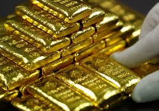
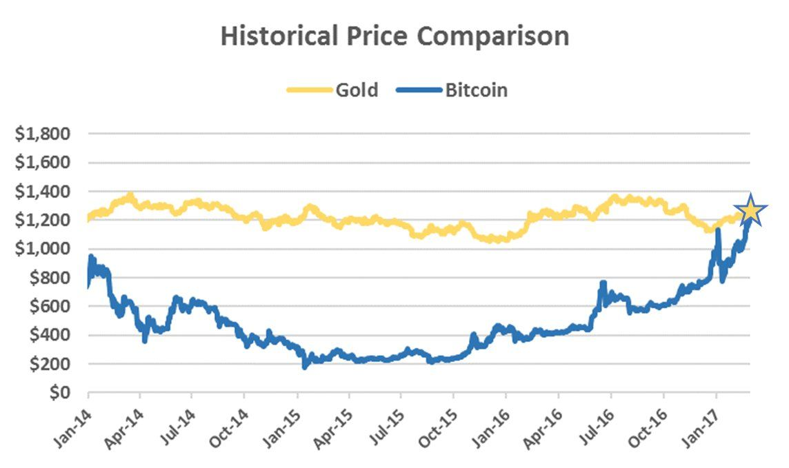
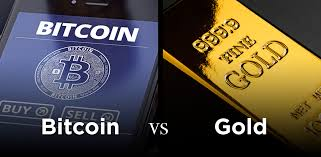
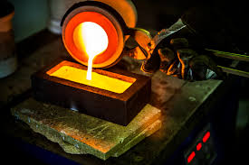

Bitcoin has recently been popularized as a hedge to global market uncertainty. It has no correlation to stocks, bonds, or other traditional investments. Bitcoin is similar in its properties to gold, both are very rare and have a limited supply. Both Bitcoin and gold are obtained through mining, gold is found in the ground and bitcoin is mined with computers.
Bitcoin has never yet performed in a recession since its creation in 2009 it has never experienced a recession. Gold has traditionally been used as an alternative to stocks when global markets take a turn for the worse, Bitcoin may be a better fit for the spot. This upcoming recession and as trade wars flare will be the first test of Bitcoin as a hedge against global market instability and a true alternative to gold. Bitcoin has been numerous times called ‘digital gold’, gold is vastly considered a safe haven during economic turmoil. It normally has an inverse correlation against the dollar and is an excellent asset to track.
In recent months we have had much economic volatility in the international market, primarily due to Brexit and trade war fears from China and their conversations with President Donald Trump. In today's age where everyone, even the most powerful man in the world, uses online communication networks and news regarding major events can be spread around the world in an instant. This has caused some stock market turmoil on Wall Street, such as the violent plunge of the Standard and Poor's 500 stock index from 3000 points to the high 2000 range earlier in the summer.
Gold, which is a reliable store of value did indeed rise as stocks continued to plunge, did not even compare to Bitcoin which ran up almost 5000 dollars to the 14,000 range. This shows that Bitcoin on a smaller scale does indeed hold value and even makes money during economic troubles, it also does it better than gold. This,however, does not prove that Bitcoin will outperform gold in the upcoming recession.
Bitcoin can never be printed or debased. There will only ever be 21 million Bitcoin and it will never go above that number. Bitcoin also has no storage costs as it is completely digital and no matter the amount it can be stored on a hard drive or USB. They are also very secure, they can be stored discreetly on an encrypted hard drive or even printed on paper for further security. Your Bitcoins are in your possession and only your possession. If you keep the private key of a bitcoin secret and the transaction has enough confirmations, then nobody can take them from you no matter who, even the government.
Bitcoin inherently has many benefits over gold. Gold is heavy, bulky, hard to store while bitcoin is online, lightweight and can be stored on a USB drive. Bitcoin also has the added benefit of being able to be sent to anywhere in the world in seconds, while transporting gold is costly, slow and prone to theft. Bitcoin being digital also has other benefits but one big con, it is not fungible. Bitcoins can never be seen or felt in the human hand and is a negative due to humans preference to be able to see and feel their money. In the longer term money being fully digital is a benefit, but in this age the ability to see ones wealth is still important as societal and social norms.
Gold, although it is the softest metal is it still metal. Since it is kept in solid heavy blocks it is very hard to divide or move without heavy machinery, which heavily drives up the cost of using it. Say if I were to want to move half of my gold to a different city, I would need to hire someone to melt it down, then recast it into smaller bars. If say I wanted to reconstruct the original gold amount, I would need to melt it down again to reform it into its original form. Not only is this extremely costly in manpower, energy, and time, it is also just too complicated for a citizen to do. Bitcoin solves this. Although the cost of a singe Bitcoin is immense and costs around the same as your car, it can be easily divided into 100 million parts, called a satoshi, which was the alias the original creator of Bitcoin used. In the same scenario for Bitcoin, one could simply just send 0.5 of a Bitcoin and it would work practically instantly compared to the melting and reforming of gold.
 Home Page